PERFECT FICTIONAL MOMENTS
Some of my favorites.
-
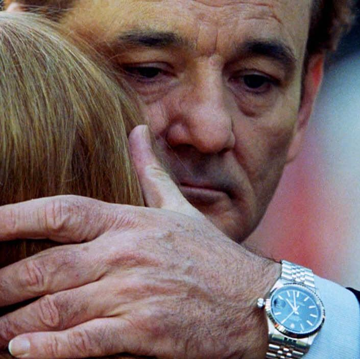
When Bill Murray whispers in Scarlett Johansen’s ear at the end of Lost in Translation
This is one of my favorite movies, and the ending couldn’t be more perfect. Two dissociated and alienated people make a meaningful connection that transcends language (the limits of which are thematic throughout the film) and now they must part. It is so fitting that the words they share in this final moment are not ours to hear, and would not mean anything to us if we did hear them.
-
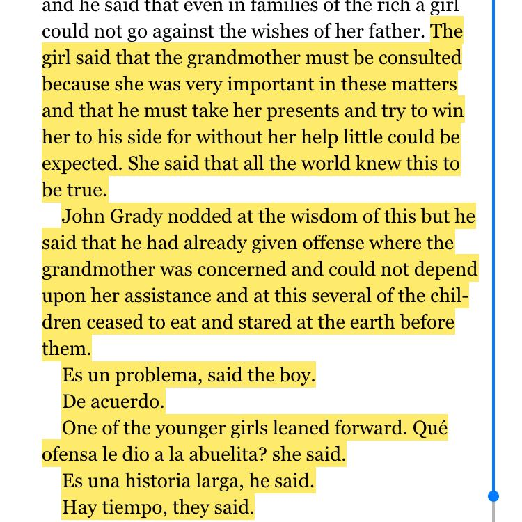
When John Grady Cole shares his lunch with schoolchildren near the end of All the Pretty Horses
This is one of my favorite moments in literature. To have John Grady retell the story we've just witnessed to children, to hear their genuine concern and their childish faith in resolution, indulges the reader's need to pause and reflect on all that has happened, and especially to pretend to believe in happy endings before the final chapters confirm what we already know. This is just a tiny excerpt of the whole beautiful passage.
-
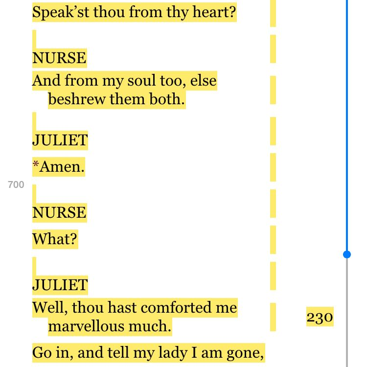
When Juliet takes control in Romeo and Juliet
Juliet begins the play a set piece until everyone in her life fails her utterly. In Act III she comes to her own as a character and as a woman. This is the moment she realizes nobody is going to rescue her, the power structures that surround her are corrupt, and she can be her own hero. Later when all is lost (allegorically), she ends her new life on her own terms with unwavering courage. She is the one true heroic character in this play.
-
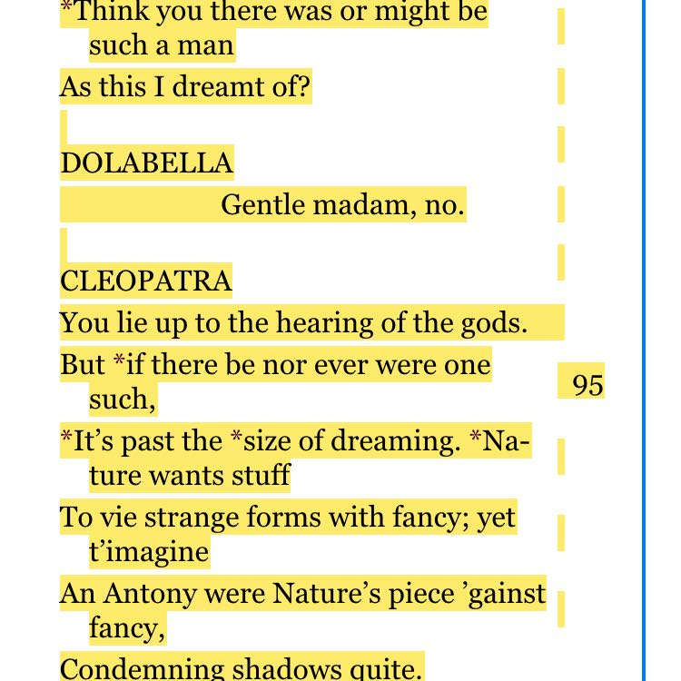
When Cleopatra eulogizes Antony in Antony and Cleopatra
Cleopatra's "I dreamt there was an emperor Antony" speech is one of my favorite passages in Shakespeare. Perhaps she is delusional but I choose to believe Cleopatra knows what we all should come to know: that the imprint we leave on those we love, and the goodness they found hidden within us far exceeds any fiction; that the real fact and truth of a life is the goodness and not the failings. Antony failed as a man but not as her man, and that condemns all shadows.
-
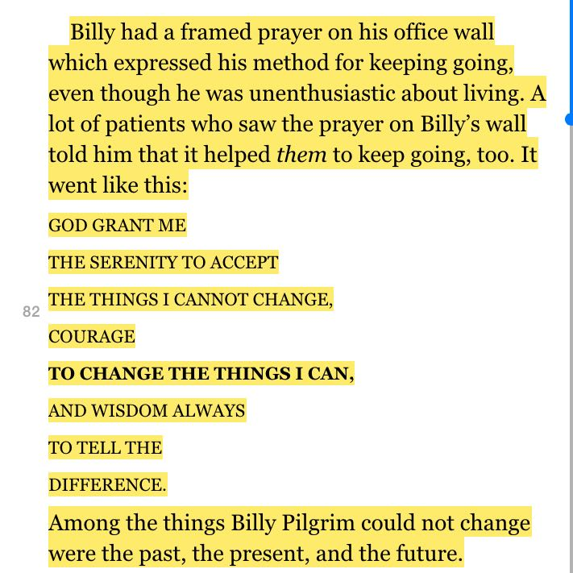
When Kurt Vonnegut reminds us how powerless we really are in Slaughterhouse Five
It is the passage most emblematic of Vonnegut’s sardonic wit, and it is a humbling reminder that life will bring us what it will.
-
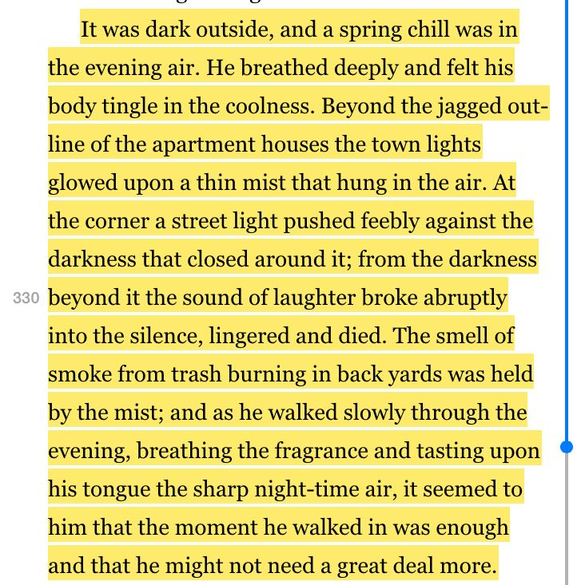
When William Stoner finds a perfect peace in Stoner
I love this book and I especially love the zen acceptance of this passage. The contrasting imagery, the feeble light, the cool nighttime. And Stoner's ability to find peace within it all.
-
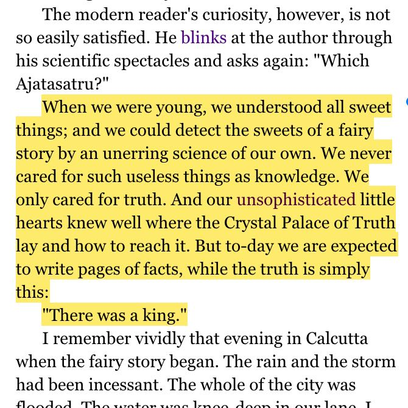
Rabindranath Tagore on the Crystal Palace of Truth in Once There Was a King
I love this aside in the opening of this story where Tagore reminds us what matters in storytelling and refuses to apologize for the unrealistic fairytale we're about to read.
-
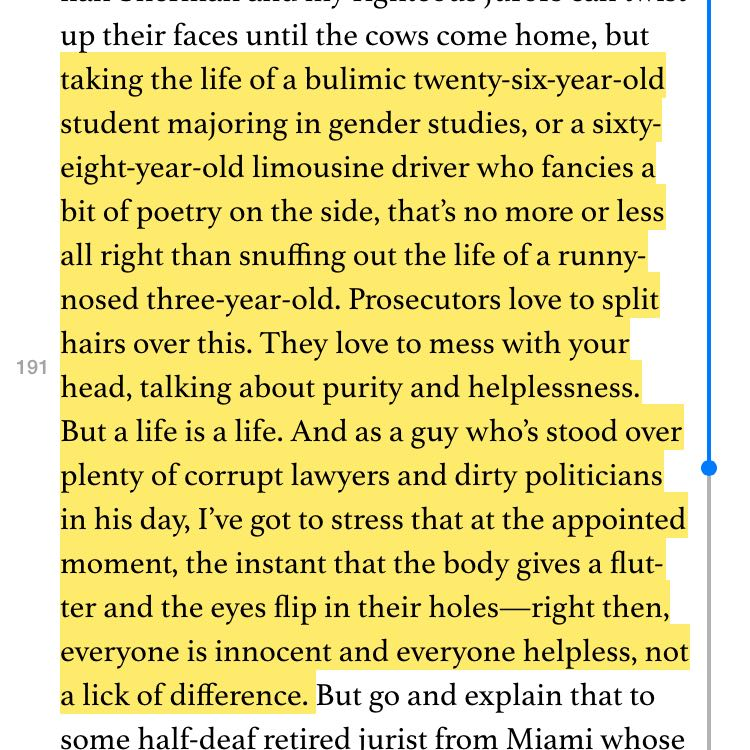
When Etgar Keerat finds humanity everywhere in One Step Beyond
I've never read anything by Keerat that wasn't great. His short stories are full of compassion, wit, and genuine originality. This passage is brave and heartfelt, and put in the mouth of a convicted killer.
-
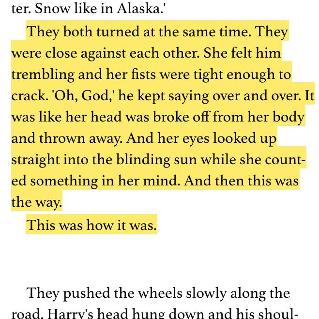
The Sex Scene in The Heart is a Lonely Hunter
This is my favorite sex scene, not because it is arousing (it isn’t) or graphic (it isn’t) but because it so powerfully conveys the total emotional dissociation of two young people unprepared to comprehend their act.
-
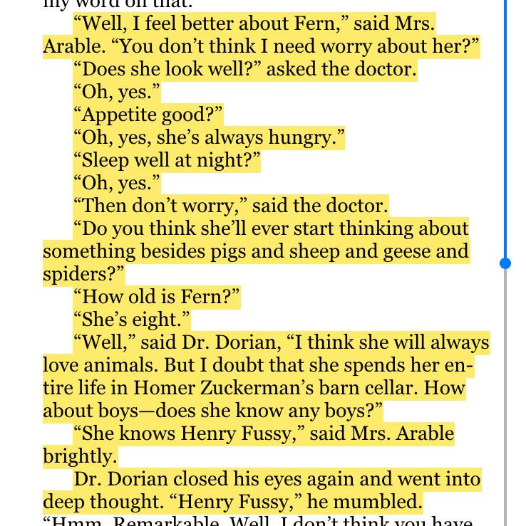
When Dr. Dorian counsels Mrs. Arable in Charlotte's Web
I love Charlotte’s Web (which I’ve read way too many times to admit) and I especially love the chapter called "Dr. Dorian". Mrs. Arable is concerned that Fern is spending too much time with animals and his response is a perfect analysis of what it means to be a healthy curious child — a privilege that only lasts such a short time. The whole chapter is great. This is just a taste.
-
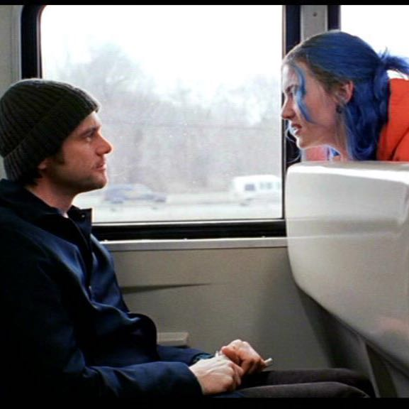
The beginning of Eternal Sunshine of the Spotless Mind the second time through
The beginning is engrossing the first time through and powerfully moving the second time through. I can't watch it enough.